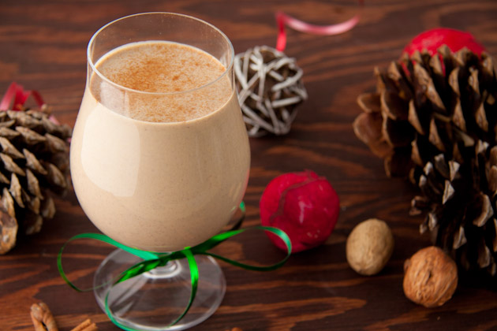

Coconut Milk Eggnog

This Coconut Milk Eggnog is a dairy-free, naturally-sweetened recipe for Classic Eggnog, and the flavors are absolutely delicious! Whether you are dairy-free or just looking for a comforting holiday beverage, you are sure to love this recipe for Dairy-Free Eggnog.
This recipe for Homemade Eggnog recipe uses canned coconut milk, but you can prepare traditional eggnog by replacing the coconut milk with whole milk if desired.
Ingredients
- Coconut Milk (only the full fat, canned variety)
- Egg Yolks
- Maple Syrup
- Spices
- Optional: Bourbon
Steps
- Combine egg yolks and maple syrup.
- Mix together the egg yolks and maple syrup until light and fluffy, using a blender or a handheld mixer. I use a blender to whip egg yolks and maple syrup until light and fluffy because I use the blender to temper the eggs later, which cut down on dishes.
- Leave the egg mixture in the blender or the mixing bowl for step three.
- Heat milk.
- Warm the coconut milk over medium-high heat with the cinnamon and nutmeg to let infuse the flavors.
- Temper eggss into coconut milk.
- Once the coconut milk is heated, slowly stream the hot coconut milk into the egg mixture, with the blender running on low or when using the mixer on a low speed.
- Cook eggnog until thick.
- Transfer the mixture back to the saucepan over a fine-mesh strainer to catch any lumps that may have potentially formed, and heat over medium heat until the mixture is thick and coats a wooden spoon, stirring/whisking constantly.
- You know the eggnog is ready when you can run your finger down the middle of a wooden spoon and the line stays clean.
- Add in vanilla and bourbon to eggnog.
- Once the eggnog has cooked and thickened, remove from heat and add in vanilla extract and bourbon if using.